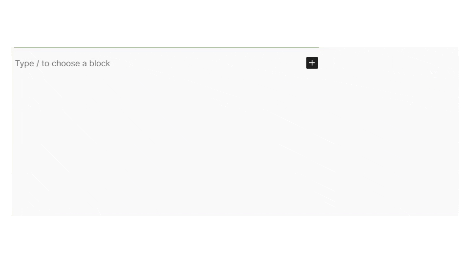
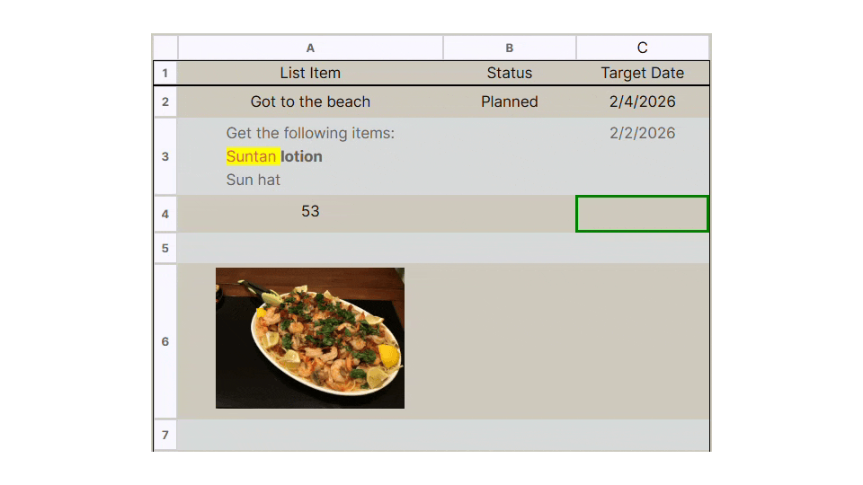
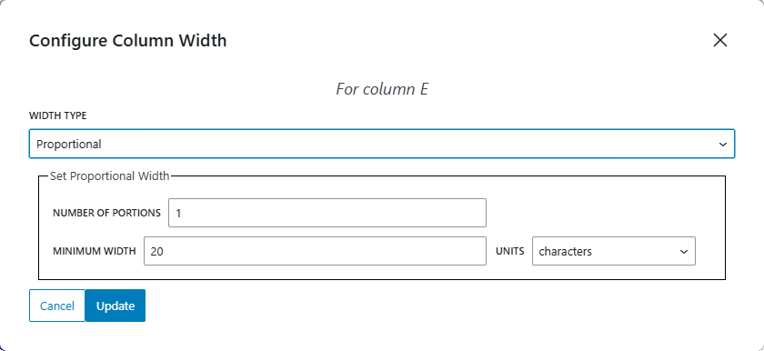
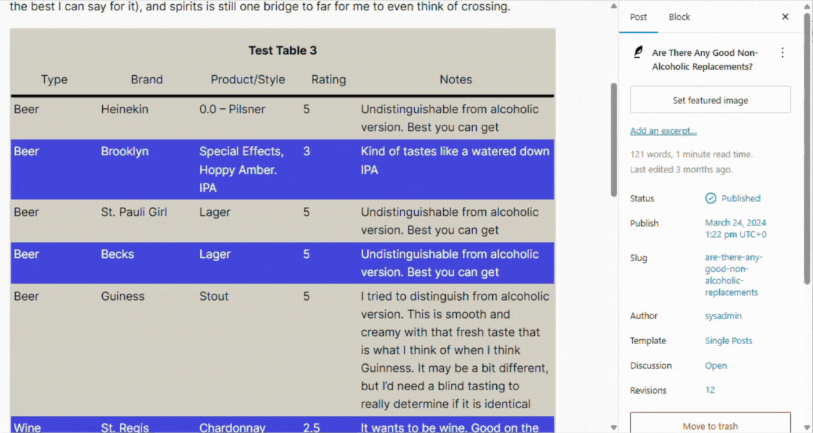

Build directly in Gutenberg
Stay inside the standard block editor with no page builder or external app required.
User Documentation
Create responsive WordPress tables with spreadsheet-style editing, keyboard navigation, and layout controls that stay readable across screen sizes.
Overview
Dynamic Tables is designed for content that needs more structure than a standard text block but should still be easy to edit directly inside the WordPress block editor. It works well for comparison tables, schedules, product listings, directories, data summaries, and other table-heavy content.
The editing experience is intentionally familiar: move through cells, update content inline, adjust widths and formatting, and publish a table that remains readable on smaller screens.
Quick Start
Plugins > Add New, or upload the plugin ZIP and activate
it manually.
Good to know: CSV import is supported. On multisite installs, activate the plugin on each site where you want to use it.
Key Features
Stay inside the standard block editor with no page builder or external app required.
Use cell-focused editing, arrow keys, tabbing, and familiar row or column actions.
Change column widths, row heights, header behavior, and grid line styling to match your content.
Support includes general text, numbers, and date or time-oriented column types.
Bring in CSV data for new tables and export tables for backup or transfer.
Tables are built to keep alignment and readability across changing screen sizes.
Typical Workflow
Start with a blank Dynamic Tables block or load data from a CSV file when you already have a table source.
Move through cells, update values inline, and manage rows or columns as the table takes shape.
Apply header options, widths, heights, alignment, and type-specific settings where needed.
The front-end output stays structured and responsive, which helps the table remain usable after publishing.
Screenshots




FAQ
Yes. CSV import is supported. Excel-specific import support is a future enhancement rather than a current built-in feature.
In most cases, yes. The plugin outputs clean semantic HTML and standard CSS, so it should integrate well with modern themes.
Yes. Responsive behavior is a core goal of the plugin, so tables are built to stay readable as screen sizes change.
Stored table data is normally retained unless you explicitly choose to remove it. Re-activating the plugin restores access to existing tables when that data has not been purged.
The plugin supports WordPress real-time collaboration behavior where it is available, but the exact experience still depends on the WordPress and Gutenberg environment running on your site.
Next Steps
This page is set up to be a clean first draft. You can keep everything on
one page, or split the content into dedicated guides such as
keyboard-shortcuts.html, importing-data.html, or
troubleshooting.html as the docs grow.
If you want to include more visuals, the copied branding and screenshot
assets already live under docs/assets/images/.